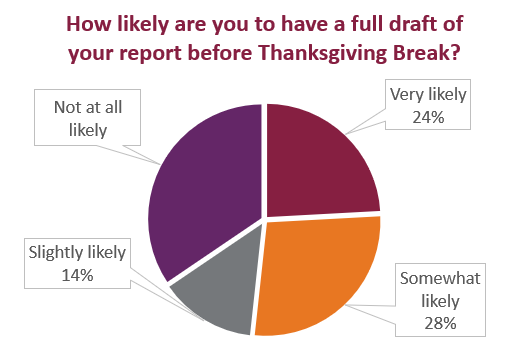

You probably want to earn a Complete on the first submission of your Recommendation Report. December 2 is the end of the grace period for the report, so there is little time to revise and resubmit.
To ensure you earn a Complete, include every section listed on the Recommendation Report Criteria in the order that they are listed. If something is missing or the sections are out of order, you’ll earn an Incomplete.
Be sure to submit all your work by 11:59 PM on Friday, December 2, 2022.
If you want to make a good impression, you need to make sure that your documents include everything your readers expect—and include that information precisely where readers expect it. As you work on your Recommendation Report, review the components that make up the front and back matter for your report in the University of Minnesota video (4m35s) below.
Frame the information in your letter of transmittal for the readers who can decide whether to implement your recommendations. Address the decisionmakers directly in the letter, and provide them with the details they need to decide whether to read more of the report. You are giving the decisionmakers a fast summary of the report, focusing on issues that they care about.
Example content to replace
Example content to replace

Example content to replace